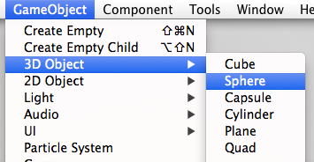

Content and Context
When thinking about lighting in Unity, it is handy to divide the concepts into what we call the content the item being lit and rendered, and the context, which is the lighting that exists in the scene which affects the object being lit.
The Context
When lighting an object it is important to understand which sources of light are affecting the object. There are usually direct light sources in your scene: Game Object lights that you may have placed around your scene. There are also indirect light sources such as reflections and bounced light. These all have an effect on the object's material to give the final result that the camera sees across the surface of the object.
This is not a hard and fast separation, often what might be considered "content" could also be the part of the lighting context for another object.
A good example of this would be a building situated in a desert landscape. The building would take light information from the skybox, and perhaps bounced light from the surrounding ground.
However there may be a character standing near an exterior wall of the building. For this character, the building is part of the lighting context - it may be casting a shadow, it may be casting bounced light from its wall onto the character, or the character may have reflective parts which are directly reflecting the building itself.
The Default Lighting Context
At startup, Unity 5 shows an empty scene. This scene already has a default lighting context available with ambient, skydome-based reflections and a directional light. Any object placed in that scene should, by default, have all lighting it needs to look correct.
Let’s add a sphere to the scene, to see the effect of the default lighting context.

The added sphere will be using the Standard shader by default. Focusing the camera on the sphere will result on something like this:

Notice the reflection along the edges of the sphere as well as the subtle ambient, from brown (bottom) to the sky blue (top). By default, in an empty scene, all lighting context is derived from the skybox and a directional light (which is added to the Scene by default).
Of course this is the default setup, a single lighting and sky reflection may not be enough in some cases. You can easily add more lighting and reflection probes:
For an in-depth view on how reflection and light probes work please see the documentation on light probes and reflection probes.
Skyboxes
A Skybox, baked or procedural, can be an integral part of your lighting setup. It can be used to control the ambient lighting and the reflections in your objects in addition to rendering the sky. Procedural Skyboxes also allow you to set the colours directly and create a sun disc instead of using a bitmap - more information can be found in the Skybox Documentation
While reflecting the skybox can be useful for many objects in your scenes, particularly outdoor scenes, there are often cases where you need to vary the reflections an object uses - there may be dark areas in an outdoor scene, such as alleyways or dense forest, or you may have interior areas which require reflections to match each room.
To meet the needs of these various reflective requirements, Unity has reflection probes which allow you to sample the environment in your scene at a certain point in space, for use as the ambient light and reflection source for any objects near that point instead of the default skybox. Reflection probes can be placed around your scene in any locations where the scene's skybox is not sufficient or appropriate.
Global Illumination
The concept of Global Illumination is integral to Unity 5. Both the Standard shader and Unity 5's GI systems have been designed to play well with each other. The GI system takes care of creating and tracking bounced light, light from emissive materials and light from the environment. You can find the details here.
The context is a critical part of the overall look of the image. In this example you can see how a scene reflects changes in context, while content and camera remains the same.

The Content
The content is the term used to describe the objects in your scene that are being rendered. Their appearance is a result of the lighting context acting on the materials that have been applied to the objects.
The Material Editor
When viewing a material in the inspector which uses the Standard Shader, the editor displays all parameters for the material including textures, blending modes, masking and secondary maps. At a glance you be able to see which features are used and preview the material. As the Standard shader is data-driven: Unity will only use the shader code required by the configuration the user has set for the material. In other words if a feature or texture slot of the material is not used, there is no cost for it and the shader combination is optimised behind the scenes.

How to create a material
The Standard shader allows for many configurations in order to represent a great variety of material types. Values can be set with texture maps or colour pickers and sliders. Generally UV mapping is required in conjunction with textures to describe which part of your mesh refers to which part of the texture map. The Standard Shader material allows you therefore to have different material properties across the same mesh when used in conjunction with specular and smoothness map or a metallic map. In other words you can create rubber, metal and wood on one mesh where the resolution of the texture can exceed the polygon topology allowing for smooth borders and transition between material types, of course this has implications for a greater complexity in the workflow, but this will depend on your texture creation method.
Textures for your materials tend to be generated in one of two ways - painting and compositing in a 2D image editor like Photoshop, or rendering / baking from your 3D package, where you can also make use of higher resolution models to generate your normal maps and occlusion maps in addition to the albedo, specular and other maps. This workflow varies dependent on the external packages used.
Generally no texture map should contain inherent lighting (shadows, highlights, etc). One of the advantages of PBS is that objects react to light as you would expect, which is not possible if maps already contain lighting information.